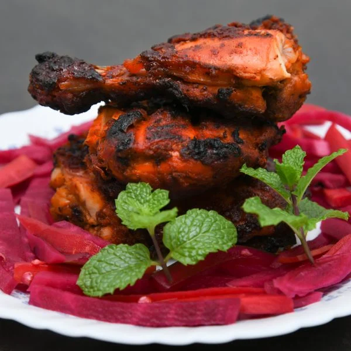

Alfam

About Alfam
Bored of eating chicken the same old way? Well, now you won’t be after trying Alfaham Chicken. This Arabic dish is made using aromatic spices that uplift the flavour of chicken, and the charcoal-grill process further adds a smoky flavour. Although from the Arabic cuisine, the best part about this dish is that you can prepare it using essential spices available in your kitchen. Continue reading to know what these spices are!
Ingredients
1¼ kg bone-in whole chicken or chicken legs
2 tbsp butter
For 1st marinade
10-12 tsp ginger garlic paste
1 tbsp Lemon Juice
2-3 tsp Tomato paste
1-2 tsp Kashmiri red chilli powder
For 2nd marinade
1 cup thick sour yoghurt or curd
2 tbsp olive oil
1-2 tsp Chilli flakes
1¼ tbsp dried fenugreek methi or mint
¾ tsp Cumin Powder
¼ tsp turmeric powder
salt to taste
Special Spice Mix
1 cinnamon stick
1 tsp Coriander Seeds
5 cloves
½ tsp black peppercorns
steps
-
Wash the chicken thoroughly and prick all over so that it can absorb the marinade well. If you’re using chicken pieces, then put them in a zip lock bag and pound gently using a kitchen mallet or rolling pin to flatten and tenderize them.
-
Add all the ingredients listed under the first marinade section in a large bowl. Mix and coat the chicken well and set aside for 30 minutes. In a pan, dry-roast the special spice mix for about a minute or until the spices release their aroma. Grind them into a fine powder and set aside.
-
In the same pan, dry-roast dried fenugreek for about 30 seconds and set it aside. Mix the ingredients listed under the second marinade section in another bowl, including the roasted fenugreek by crushing it with your hands. Also, add the blended special spice mix. After 30 minutes of the first marinade, pour and rub the second marinade on the chicken. Set aside for a minimum of 3 hours.
-
Grill the chicken over charcoal barbecue until all sides are slightly charred and cooked. It can take about 15-20 minutes. Once the chicken is done, brush melted butter over it.
- Serve hot with salad, fries and spicy garlic sauce.